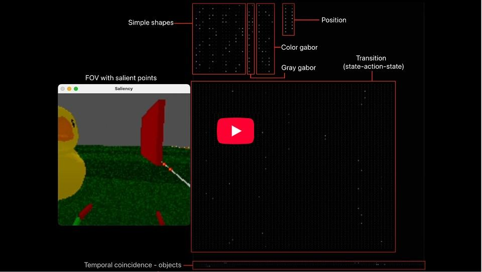

Machine Learning
I first came across a collection of papers on neural networks at the Petnica Science Center for high school students when I was 14 (in 1996), and since then, I have become obsessively interested in AI.
I published my first paper in 2006 on the classification of leukocytes using a neural network:
Application of Neural Network for Automatic Classification of Leukocytes
In the last couple of years, I've been doing research on neuromorphic online learning. The models use sparse encoding and Hebbian learning (deliberately avoiding backpropagation and derivative-based algorithms which lead to destructive learning when used for online learning).
Please take a look at the short video below to see simple sparse encoding neural network in action.
Note: Watch in 1080p HD resolution

EEG ERP classification in MATLAB with SVM
The aim of this project was to use MATLAB to record EEG data during visual stimulation and then classify it using Support Vector Machines (SVM).
The AI algorithm for processing of EEG was recognizing if person is looking into image of "face" or some other category like "natural scenery", "house" during time locked visual stimulation. Whole project was finished during Backyard Brains summer Neuroscience Fellowship on which I was mentor. At the end of the Fellowship a TED video was recorded in which the results are demonstrated (please check the video included here).
For this project I had to:
- decide on which AI algorithm it will be used to classify multichannel EEG in real time
- implement training and real time inference of the Support Vector Machine (SVM) in MATLAB
- make real time communication between MATLAB and EEG amplifier through serial USB.
I choose to utilize SVM was driven by the limited size of our training dataset. SVM classification leverages a hyperplane with maximum margin, which translated into robust generalization performance during deployment.
Whole project is open-source on GitHub.